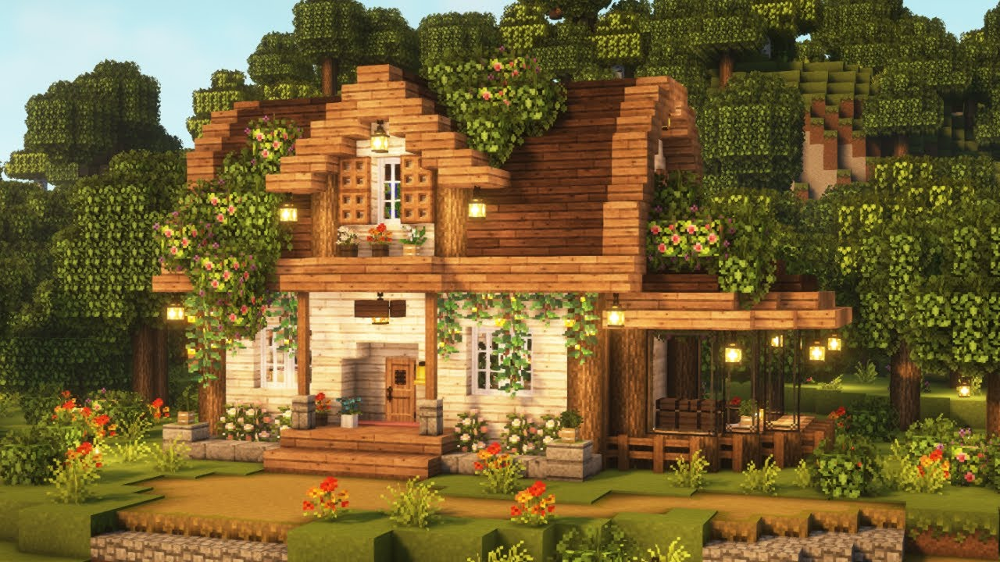
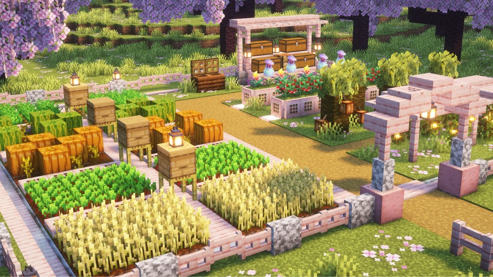

Building My First Cozy Cottage
September 27, 2026 by Mia-Elissabeth Lawrence

Every Minecraft world I start begins the same way: punch a few trees, panic when the sun starts to set, and dig a hole in the nearest hill. This time I wanted something better, so I planned a small cottage before placing a single block. I picked spruce planks for the walls, a dark oak roof, and a tiny garden out front with sweet berry bushes.
The roof was the hardest part. Getting the slopes to line up took three attempts, and I learned that stairs and slabs are your best friends when you want a roof that doesn't look like a box. Once it was done, I added lanterns, a chimney and a little pond with lily pads. It's not a mansion, but it feels like home, and it's the first build I'm proud enough to share.
Why I Treat Minecraft Like a Coding Project
October 2, 2026 by Mia-Elissabeth Lawrence

Redstone is basically programming with blocks. Every lever, repeater and piston is an input, a delay or an output, and when something doesn't work you debug it the same way you would debug code: check one part at a time until you find the broken connection. My first automatic farm failed because a single piece of dust was facing the wrong way.
That habit of breaking a big problem into small steps is exactly what I'm practising in my courses. Planning a build, testing it, fixing it and improving it is the same loop I use when I write HTML and CSS. Next, I want to build a sorting system for my chests, which sounds like the perfect excuse to practise my logic skills.